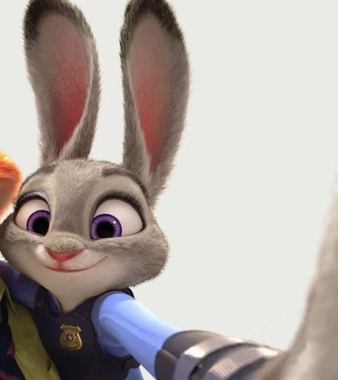
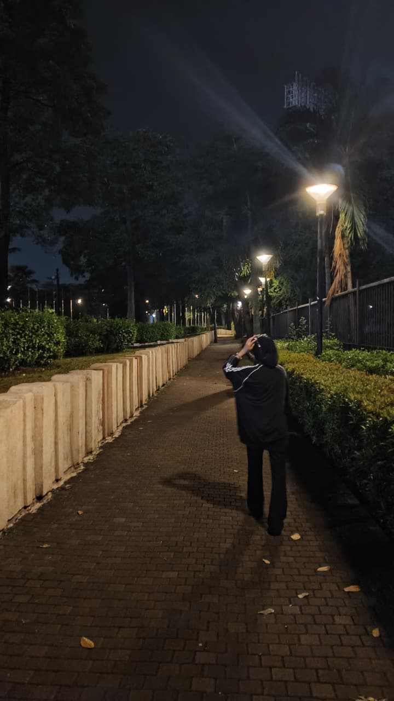
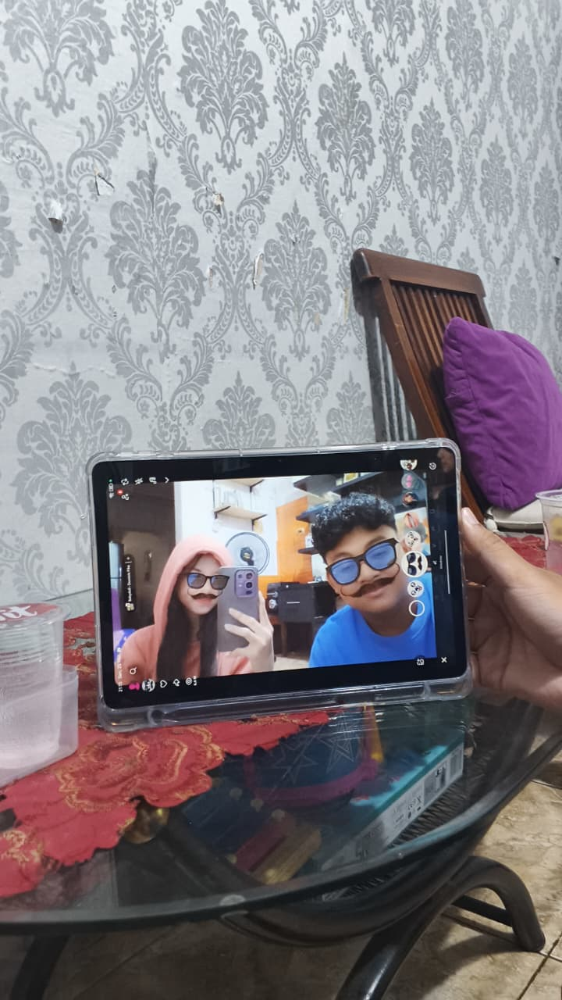
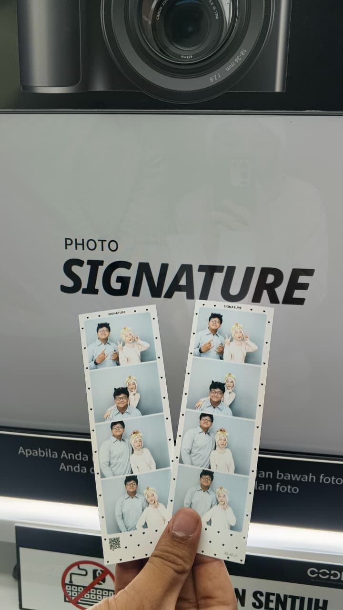

Ada pesan buat kamu.
Ada sesuatu yang ingin aku sampaikan…
Tapi aku tidak ingin menuliskannya di kertas biasa.
Jadi aku buatkan halaman kecil ini, khusus untuk kamu.
Jujur, pertama kali kita “ketemu” lewat chat, aku lagi deg-degan banget.
Orang tua kita tiba-tiba minta aku konvoi bareng kamu pulang karena kamu bawa motor sendirian.
Aku yang biasanya santai, tiba-tiba nulis chat pertama dengan hati yang berdegup kencang.

Suatu hari kamu ditawarin temen kantor buat ke GBK, tapi kamu nolak karena jauh dan nggak tau jalan.
Aku yang waktu itu baru beberapa kali main sama kamu, tiba-tiba nawarin “Ikut aku aja”.
Yang bikin aku kaget, orang tua aku langsung izinin aku bawa mobil buat nemenin kamu.
Di perjalanan pulang, aku fotoin kamu yang lagi asik foto pemandangan malam.
Waktu itu aku sadar… aku mulai nyaman sama kamu.

Kamu ajak aku main ke rumah buat nonton Netflix bareng.
Padahal lebih banyak ngobrolnya daripada nontonnya.
Kita foto-foto pake filter lucu, ketawa-ketawa, dan ngobrol sampai lupa waktu.
Rasanya tenang… kayak udah lama kenal.

Suatu hari kita cuma pengen ketemu sebentar buat melepas rindu.
Akhirnya kita PhotoBooth, Makan olie, ngobrol santai, lalu keliling kota malam-malam.
Nggak ada rencana besar, tapi justru momen kayak gini yang bikin aku senang bisa dekat sama kamu.

Aku sengaja ngasih ini hari ini,
aku harap kamu bisa merasakan betapa spesialnya kamu buat aku.
Semoga kamu suka bunga yang aku kasih hari ini,
Semoga kamu suka dan inget terus sama aku
Jangan lupa senyum yaaa ninaaa, aku bakal terus disini sama kamu.
Dari aku,
yang senang bisa dekat sama kamu.